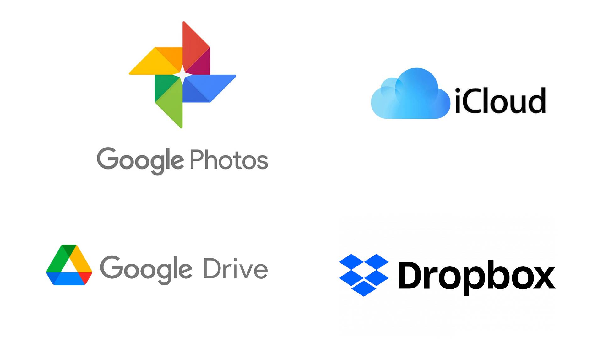

Linked Data from publication to query
TODO:: Intro
Data publication on the Web
- The current Web provides scalability in amount of clients, not in amount data sources
- There is no inherent scalability in the integration of APIs
- Scalability comes from integration of data
A Web of API integration
- The current Web provides scalability in amount of clients, not in amount data sources
- There is no inherent scalability in the integration of APIs
- Scalability comes from integration of data
Data Silos on the Web

Linked Data Publishing strategies
Data Publishing strategies
!important
TODO:: fix slide. link blog Ruben
-
Clients are not limited to the server abstraction of data.
Clients can use abstractions over the Server API.
Linked Data Publishing
- data dump
- provides an archive file with the entire dataset
- SPARQL endpoint
- provides a query endpoint
- Linked Data Fragments
- provides a fragmentation of the dataset
A data dump stores all triples of a dataset in one or more files
-
Clients need to download the full archive
before they can query it.
- These can be several gigabytes.
-
They offer the client full flexibility
to choose how data is processed.
-
Keeping data up-to date requires effort.
-
redownload the entire dump
and apply incremental patches
A data dump places all dataset triples
in one or more archive files.
A SPARQL endpoint lets clients evaluate
arbitrary (read-only) queries on a server.
-
This gives clients direct access to
(only) the data they are interested in.
- Only very little bandwidth is required.
-
Data is always up-to-date.
-
The per-request cost for SPARQL endpoints
is much higher than for other HTTP servers.
- Few servers allow arbitrarily complicated queries.
A SPARQL endpoint lets clients evaluate
arbitrary (read-only) queries on a server.
Solid: Linked Data Platform (LDP)
-
Linked Data Platform: read-write architecture for Linked Data using HTTP operations
-
LDP RDF Resources
- resources that are represented by RDF
- LDP Container: special type of LDP Resource that contains links to other resources (comparable to a directory)
Solid: Linked Data Platform (LDP)
TREE Hypermedia - Linked Data Event Streams (LDES)
TREE Hypermedia - Linked Data Event Streams (LDES)
TODO: maybe use Pieter C slides? -> this demo currently sucks...
Triple Pattern Fragments
SPARQL endpoint
Linked Data querying interfaces
Querying a data dump
- Download the data dump
- Load the files using a library such as N3.js
- Query the data using the library
Querying a data dump
-
Downsides
- Requires downloading all the data - even when you only are interested in a small part
- New version? A full download of the new version is required or incremental patches have to be applied
Querying a data dump: javascript example
const response = await fetch(sourceUrl);
const text = await response.text();
const textStream = streamifyString(text);
const quadStream = rdfParser.parse(textStream,
{contentType: 'text/turtle'});
const store = await storeStream(quadStream);
store.getQuads()
Querying a Solid pod
- A solid pod contains documents
- Each document can be queried like a data dump
- Due to authorization, you can only download what you are allowed to read
- A solid pod allows for building systems
- Data can be written to a solid pod (in contrast to a data dump)
Querying an LDES
Querying an LDES
Querying a SPARQL endpoint